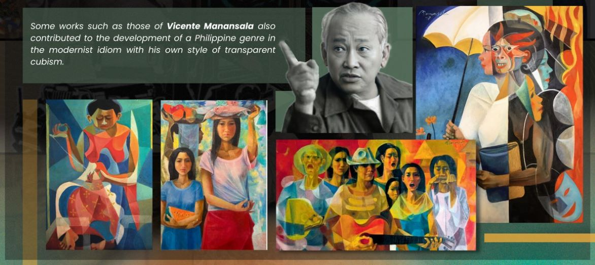

Exploring PH Arts
Visual Arts
Visual arts in the Philippines came to prominence in the 1960s which led to the emergence of a brilliant breed of younger artists who tackled cultural or social issues, local customs or traditions, and indigenous cultures with an artistic verve. The Philippine contemporary visual arts have significantly explored a variety of Western and Eastern styles, media, and philosophies to express themselves as individuals and as Filipinos (Manores, 2016).
PH Visual Artists

Graphic Designing
With the existing computer technologies, graphic designs are also rampant these days in which artists give form to books, magazines, websites, advertisements, and other graphic messages (Marcus, 2002).
Challenges ahead